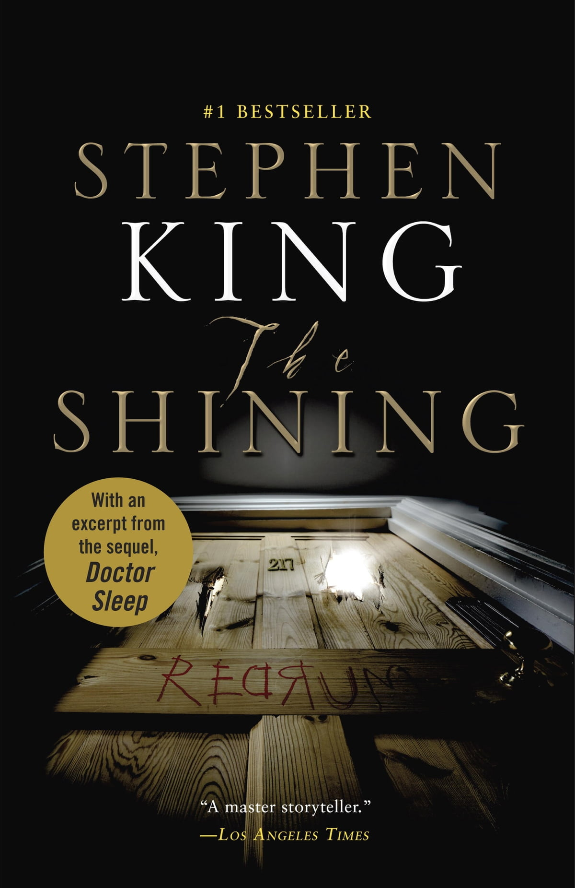

The Shining
More Information
See this linkPlot:
"The Shining" by Stephen King is a gripping psychological horror novel that follows the Torrance family's descent into madness at the remote and haunted Overlook Hotel.
Jack Torrance, an aspiring writer and recovering alcoholic, accepts a job as the winter caretaker of the Overlook Hotel, which remains isolated and inaccessible during the snowbound winter months. He moves in with his wife, Wendy, and their young son, Danny, who possesses psychic abilities known as "the shining."
As the family settles into the vast, eerie hotel, Danny's psychic powers reveal the malevolent spirits haunting its halls. The Overlook Hotel has a dark history of violence and tragedy, and its malevolent energy awakens Danny's visions.
As the isolation and supernatural influences begin to take their toll, Jack's mental stability deteriorates, and he becomes increasingly possessed by the hotel's evil forces. The malevolent spirits manipulate his weaknesses, driving him into a state of madness and violence.
Wendy becomes increasingly concerned about Jack's behavior, but her fear intensifies when she discovers the malevolent spirits' presence firsthand. Desperate to protect her son and herself, she must confront the horrors within the hotel and fight for their survival.
Meanwhile, Danny's psychic abilities become a crucial tool for the family's survival. He discovers that the hotel's haunted past holds the key to understanding its malevolence and unlocking the dark secrets it harbors.
"The Shining" is a chilling exploration of the human psyche, the effects of isolation, and the power of malevolent forces. It remains a timeless and terrifying tale that delves deep into the dark recesses of the human mind, leaving readers on the edge of their seats until the final, chilling confrontation with the malevolent spirits of the Overlook Hotel.